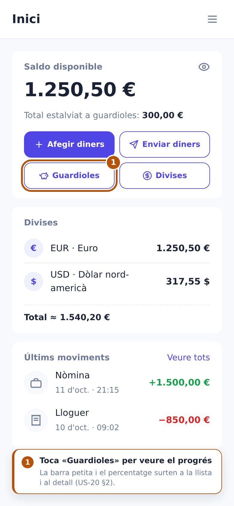
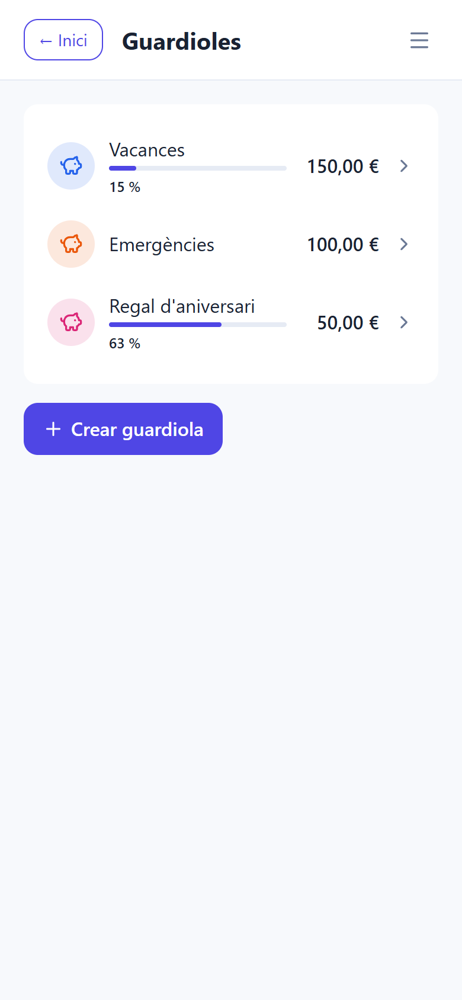
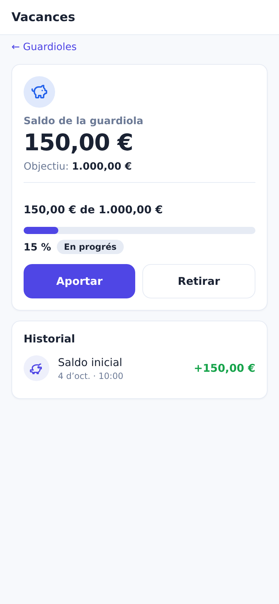
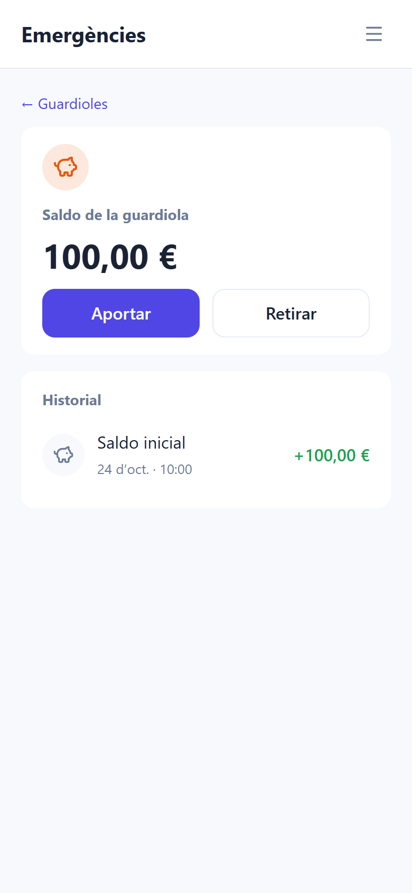
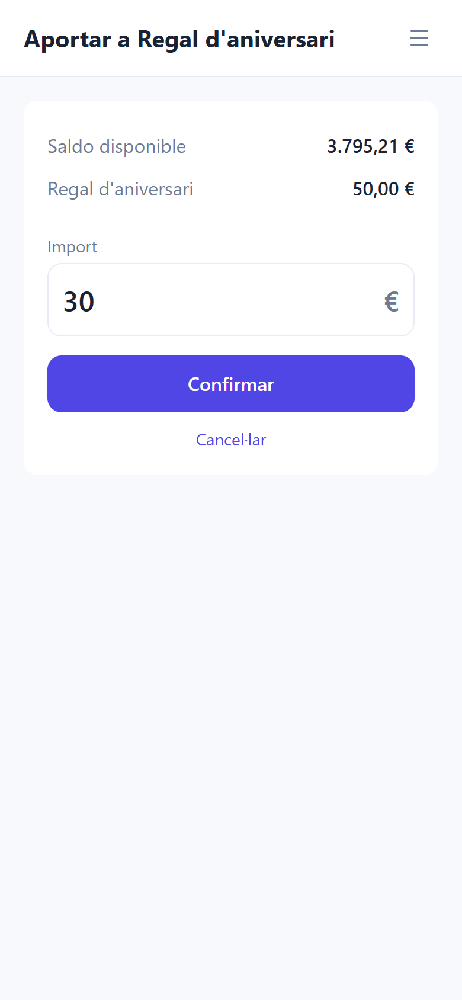
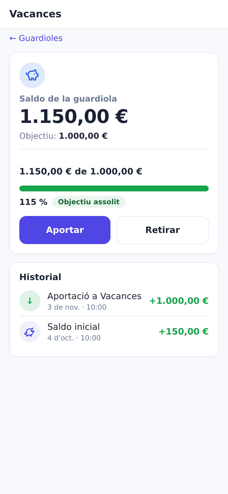
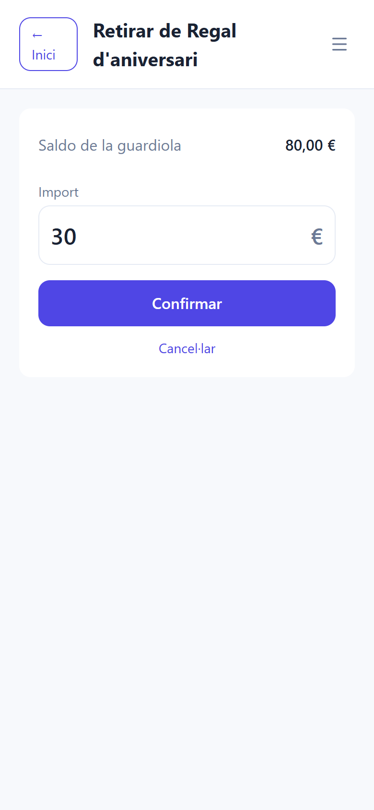
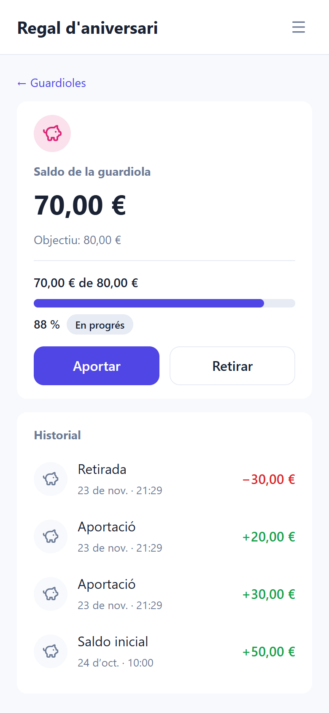

El botó «Guardioles» porta a la llista amb el progrés.

Barra petita i percentatge sota el nom; «Emergències» sense objectiu no en té.

«150,00 € de 1.000,00 €», barra lila, «15 %» i «En progrés».

Ni barra ni percentatge.


Barra verda, «100 %» i «Objectiu assolit».


Torna a «63 %» i «En progrés».
